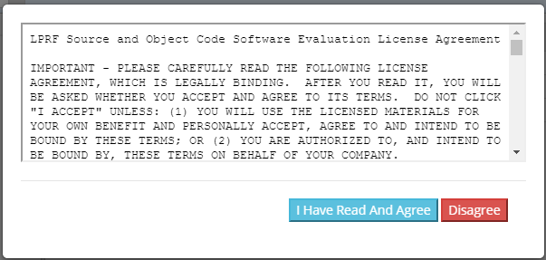

TI Bluetooth Mesh Quick Start Guide¶
This section serves as a road map for users developing applications and products using the TI SimpleLink CC13xx or CC26xx wireless MCU platform for Bluetooth Mesh applications. Whether a seasoned developer or just getting started, TI has created a variety of resources to simplify development on the CC13xx or CC26xx platform. These resources will enhance your experience with the TI SimpleLink TI BLE5-Stack from the out-of-the-box demo to production.
To download the CC13xx or CC26xx SDK, please visit the download page: http://www.ti.com/tool/SIMPLELINK-CC13XX-CC26XX-SDK.
Using Bluetooth Mesh Projects with CCS¶
Import Project to CCS Using Resource Explorer¶
A quick and easy way to start working with the SDK is to use the TI Resource Explorer in CCS.
This section describes how to import and build an existing project and
references the simple_mesh_node project.
Important
Bluetooth Mesh is supported on all CC13xx/CC26xx devices. Currently, not all example projects are available in the SDK. In this case, start out with any simple_mesh_node example and refer to the following e2e post for further instructions.
Open the CCS IDE from the Start Menu.
Create a workspace.
Tip
Ensure that the CCS workspace path does not contain a whitespace.
Import a CCS Project using Resource Explorer
Open Resource Explorer (if not open already): View -> Resource Explorer
Navigate to the CCS folder for your chosen example: Software → SimpleLink CC13xx/CC26xx SDK → Examples → Development Tools → CC13xx or CC26xx LaunchPad → BLE5-Stack → simple_mesh_node → TI-RTOS → CCS Compiler → simple_mesh_node
Select the CCS Logo button to import project into Project Explorer
Attention
The import process will also install the SimpleLink CC13xx/CC26xx SDK if a local version does not exist. You must accept the End User License Agreement to proceed.
Figure 138. Install SimpleLink CC13xx/CC26xx SDK¶
After the installation finishes, you must reopen CCS before importing the project.
If everything is successful, the project should appear in Resource Explorer: simple_mesh_node_CC26X2R1_LAUNCHXL_tirtos_ccs.
{kind=link}
Build and Download Project¶
To build & download simple mesh node:
Build the project.
Select Project -> Build All to build the project.
As part of the prebuild process, SysConfig will run and generate code based on the
.syscfgin the workspace. For more information on SysConfig, see the SysConfig chapter of the User’s Guide.
Load the project
Select Run -> Debug to download the application to the device
Before beginning execution, open a terminal window with the following settings:
UART Param |
Default Values |
|---|---|
Baud Rate |
115200 |
Data length |
8 bits |
Parity |
None |
Stop bits |
1 bit |
Flow Control |
None |
When the debugging session opens, click the green start button to start execution. Continue on to the simple_mesh_node example README for information about using the example.
Troubleshooting Help
While working with your application, you may run into issues that require the use of a debugger. See the Debugging chapter in the TI BLE5-Stack User’s Guide for guidance.
Bluetooth Qualification¶
Texas Instruments experts have written the How to Certify Your Bluetooth Product guide to assist you through this process.